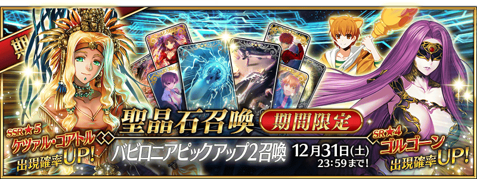
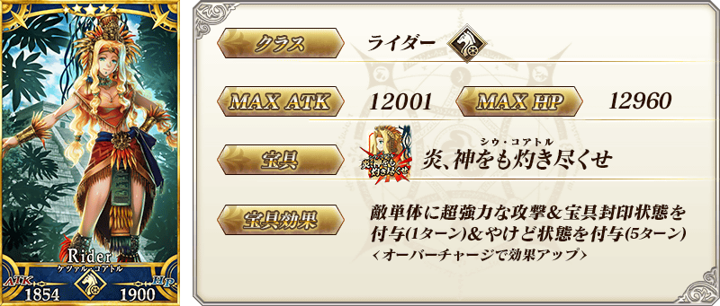
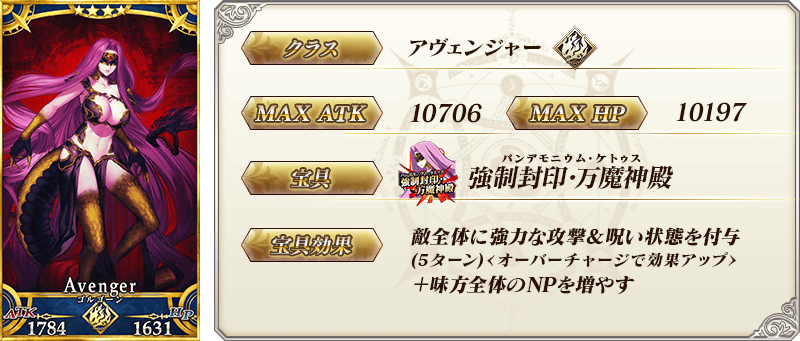
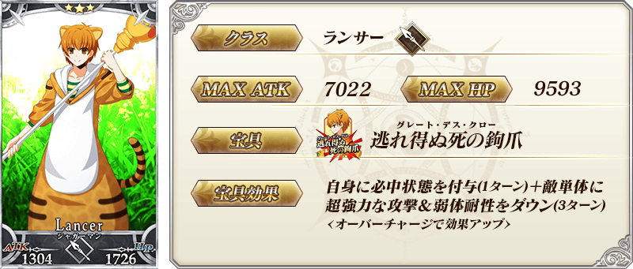
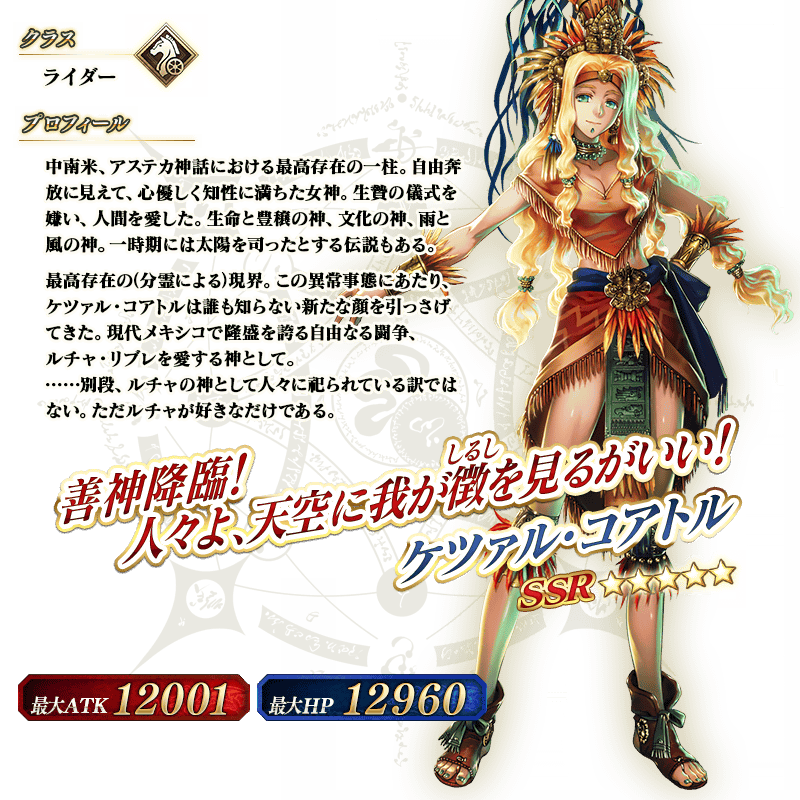

◆「巴比倫尼亞Pick Up2召喚」期間◆
期間：2016年12月14日(三) 16:00～12月31日(六) 22:59
舉辦期間限定「巴比倫尼亞Pick Up2召喚」！
※未到達第七特異點的狀態也能進行巴比倫尼亞Pick Up2召喚。
從在「第七特異點 絕對魔獸戰線 巴比倫尼亞」活躍的Servant中，這次是「★5(SSR)魁札爾・科亞特爾」「★4(SR)戈爾貢」「★3(R)豹人」Pick Up！
詳情請在聖晶石召喚畫面左下的召喚詳細確認。
Pick Up期間中，Pick Up Servant的出現機率提升！
10次召喚中★4(SR)以上1張確定和★3(R)以上的Servant1位確定！
※★4(SR)以上確定包含Servant和概念禮裝。
※所謂「出現機率UP」意指比同稀有度的Servant及概念禮裝出現機率更高的設定。



